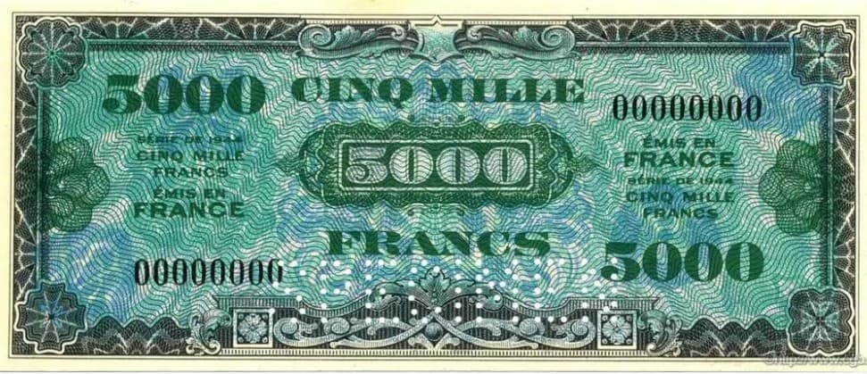
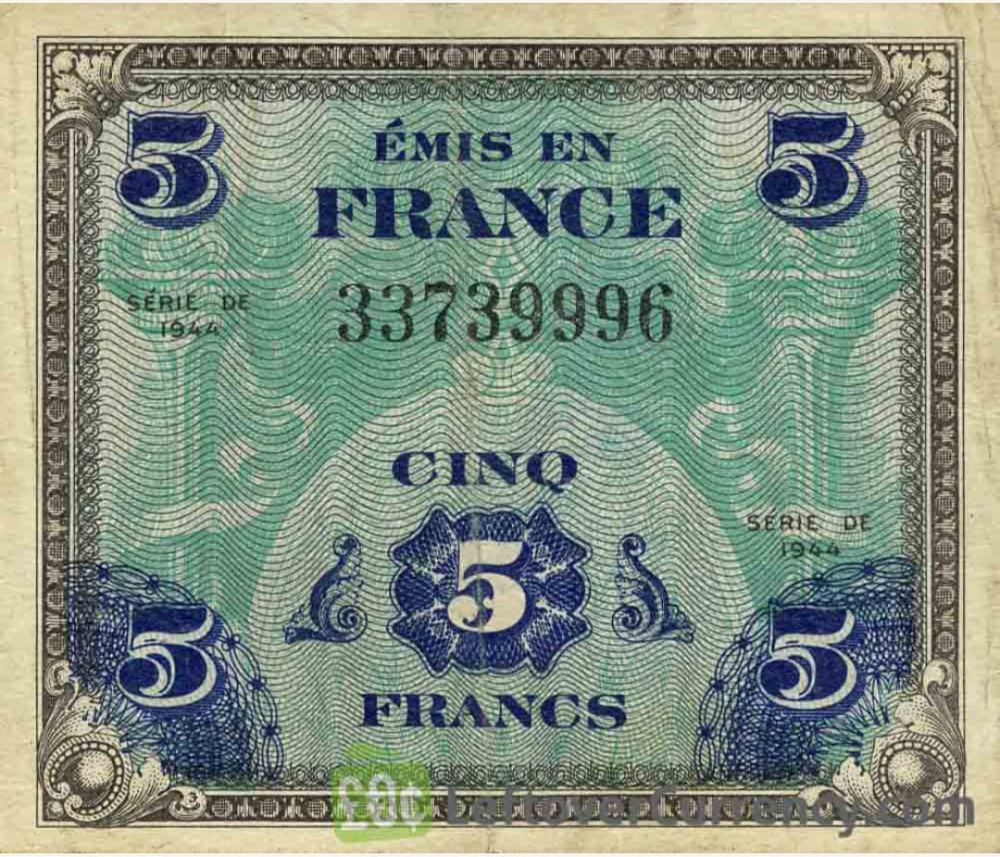
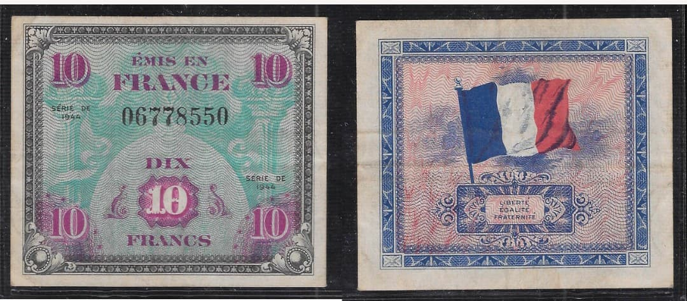
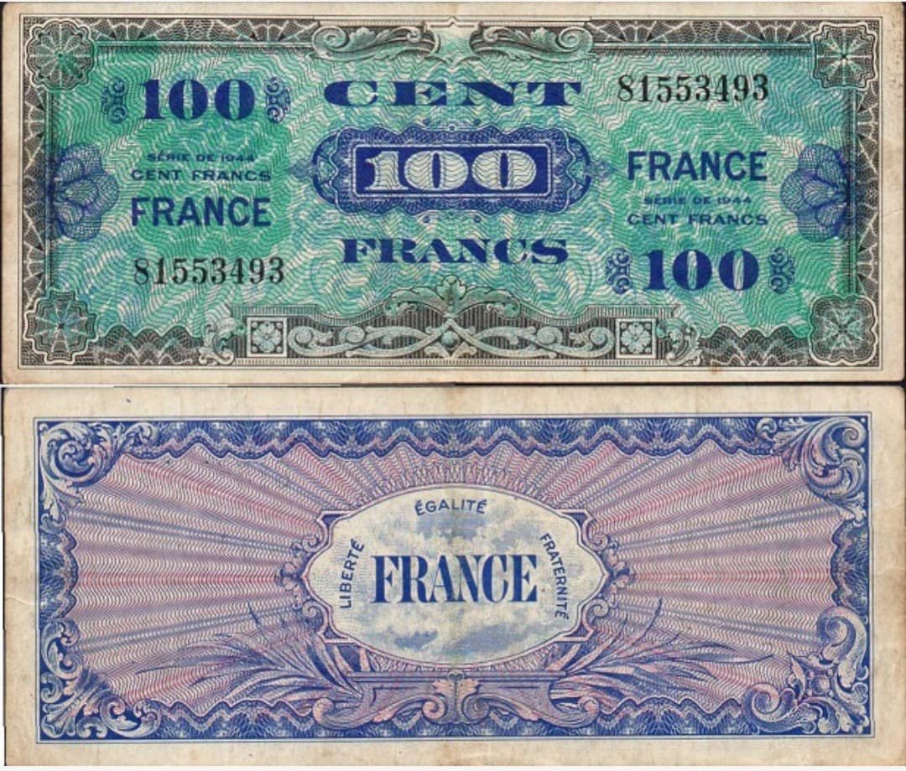
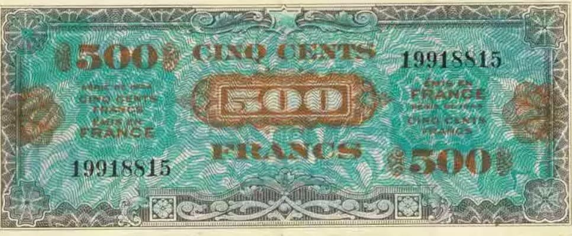
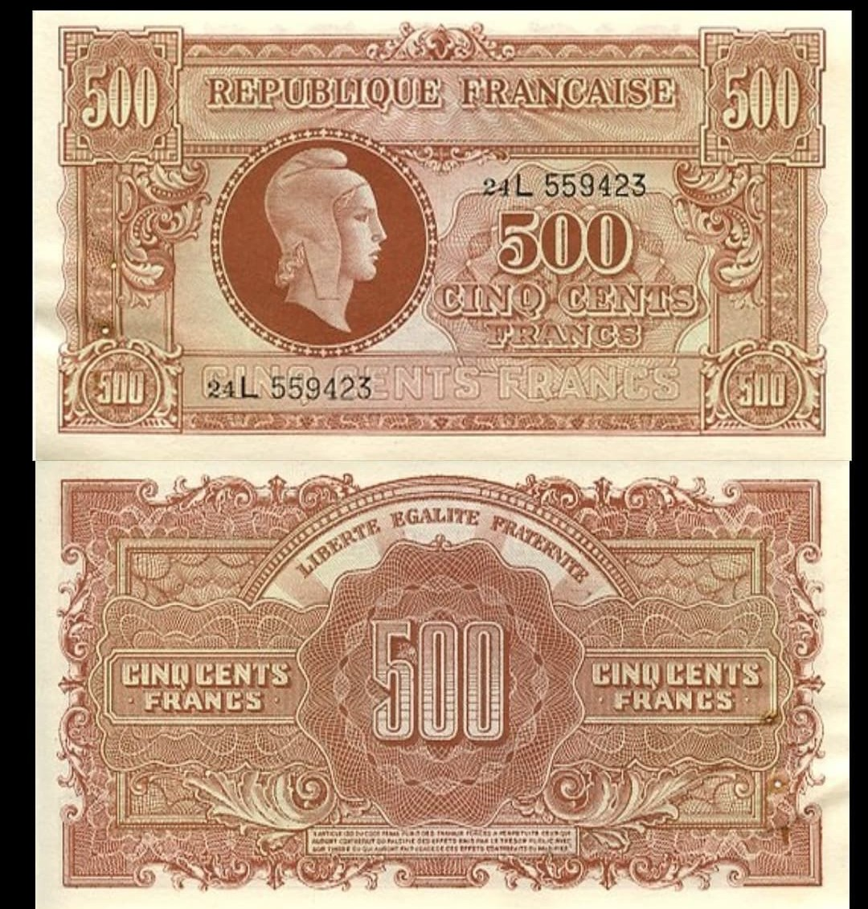
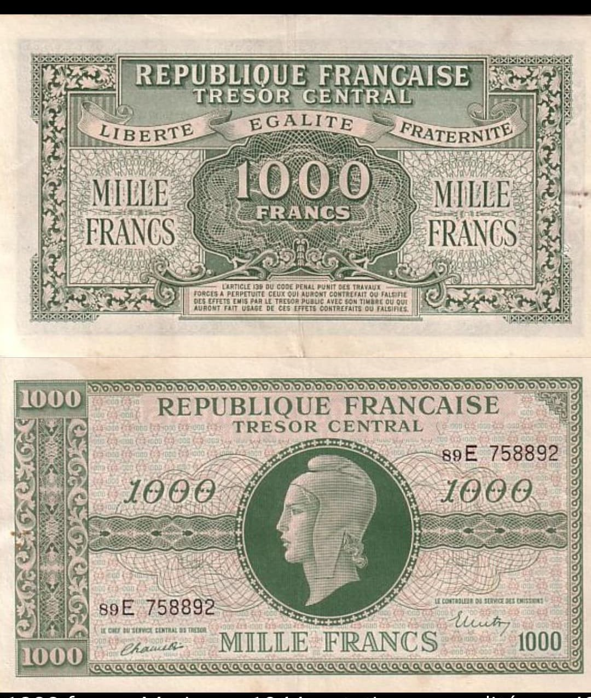

Introduction
Cette fiche présente en détail les billets drapeau émis en 1944 par le gouvernement américain pour la France libérée, ainsi que les billets de la Libération voulus par le général de Gaulle et imprimés en Angleterre et par le Trésor français. L’ensemble est traité dans une perspective strictement historique, sans jugement contemporain, afin de documenter un épisode majeur de la reconstruction monétaire de la France après l’Occupation.
Les billets drapeau incarnent la volonté des États‑Unis de contrôler la monnaie dans une France administrée par l’AMGOT, tandis que les billets Marianne 1944 et les émissions de la France Libre représentent la réaffirmation de la souveraineté française.
Les billets drapeau : origine et objectifs
Les billets drapeau sont des billets de banque français imprimés aux États‑Unis entre février et juin 1944 par le Bureau of Engraving and Printing, l’organisme du Trésor américain chargé d’imprimer les dollars. À cette époque, la France est encore sous occupation allemande, mais le débarquement allié est imminent.
L’objectif des autorités américaines est de disposer d’une monnaie immédiatement disponible pour les territoires libérés, afin de faciliter les échanges, les paiements et l’administration militaire. Ces billets s’inscrivent dans le cadre de l’AMGOT (Allied Military Government of Occupied Territories), un système d’administration alliée prévu pour les pays libérés ou occupés.
Les Français sont invités à échanger leurs anciens billets contre ces nouvelles coupures, ce qui place de facto la monnaie française sous contrôle américain dans les premiers jours de la Libération.

Caractéristiques des billets drapeau
Les billets drapeau sont des billets français dans leur libellé, mais leur fabrication est entièrement américaine. Ils utilisent le même papier et la même encre que les dollars, ce qui leur donne une apparence proche des billets américains de l’époque.
On y trouve plusieurs éléments caractéristiques :
- Nom du pays : mention « France » ou « Émis en France ».
- Devise : « Liberté, Égalité, Fraternité ».
- Symbole : drapeau français au verso pour certains types.
- Série : indication « Série de 1944 ».
- Valeur faciale : 5, 10, 100, 500, 5000 francs.
On distingue deux grandes familles :
- Billets avec mention « France » au verso.
- Billets avec drapeau français dessiné au verso.

Billet drapeau – 5 francs (Série 1944)
Le billet de 5 francs est la plus petite coupure de la série. Il porte la mention « Émis en France » et la valeur « CINQ FRANCS ». Son graphisme rappelle les petites coupures américaines, avec des motifs bleus et verts. Il ne comporte pas de drapeau au verso, mais fait partie intégrante de l’émission AMGOT.

Billet drapeau – 10 francs (drapeau français)
Le billet de 10 francs est le plus emblématique. Son verso montre le drapeau tricolore français encadré par un motif décoratif, accompagné de la devise « Liberté, Égalité, Fraternité ». C’est ce visuel qui donne son nom à l’ensemble : billet drapeau.
Ce billet illustre la volonté américaine de produire une monnaie qui semble française dans son iconographie, tout en restant contrôlée par les autorités alliées.

Billet drapeau – 100 francs (mention « France »)
Le billet de 100 francs présente au verso la mention « FRANCE » entourée de motifs colorés, avec la devise nationale. Il ne montre pas le drapeau, mais affirme clairement le territoire d’émission. Ce type de billet est particulièrement recherché par les collectionneurs, notamment dans les coupures de 500 et 5000 francs.

Billet drapeau – 500 francs
Le billet de 500 francs se distingue par son format plus imposant et ses motifs turquoise et bruns. Il porte la valeur « CINQ CENTS FRANCS » et s’inscrit dans la série de 1944. Fabriqué avec les mêmes matériaux que les dollars, il illustre la dimension technique de cette émission américaine.
Billet drapeau – 5000 francs
Le billet de 5000 francs est l’une des coupures les plus rares et les plus spectaculaires de la série. Grand format, richement décoré, il porte la mention « Émis en France » et la valeur « CINQ MILLE FRANCS ». Il incarne la volonté américaine de disposer d’une gamme complète de billets pour l’économie française libérée.
Utilisation des billets drapeau en France
Après le débarquement de juin 1944, les billets drapeau sont mis en circulation dans les zones libérées. Les Français sont invités à échanger leurs anciens billets contre cette nouvelle monnaie. Les banques reçoivent la consigne d’accepter ces billets, tout en étant incitées à ne pas les remettre en circulation.
Dans la pratique, ces billets sont utilisés pour des paiements courants : achats, transactions locales, règlements administratifs, et même paiement des impôts. Pour la population, un billet accepté par la banque est une monnaie légitime, ce qui renforce l’impression que la France est en train de passer sous une monnaie décidée à l’étranger.

Le général de Gaulle face aux billets drapeau
Pour le général de Gaulle, les billets drapeau représentent bien plus qu’un simple instrument monétaire. Ils incarnent une tentative de mise sous tutelle de la France par les puissances alliées. Dans ses Mémoires de guerre, il qualifie ces billets de « sous‑monnaie » et les considère comme une contrefaçon de la monnaie française.
De Gaulle refuse que la France soit traitée comme un territoire occupé soumis à une administration militaire étrangère. Il s’oppose à l’AMGOT et défend l’idée que la France doit être gouvernée par un gouvernement français légitime, avec sa propre monnaie.
La circulation des billets drapeau, y compris pour le paiement des impôts, est pour lui le symbole d’une France administrée et financée par une puissance étrangère. Cette situation est incompatible avec sa vision d’une France libre et souveraine.
Le 27 juin 1944, quelques jours après son arrivée à la tête du gouvernement provisoire de la République française, de Gaulle décide d’interdire les billets drapeau. Ils continuent toutefois à circuler jusqu’à la fin du mois d’août 1944, avant d’être progressivement retirés et finalement démonétisés en 1947.
Ce que voulait de Gaulle : une monnaie française, libre et républicaine
De Gaulle ne se contente pas de refuser les billets drapeau : il porte une vision précise de ce que doit être la monnaie de la Libération. Pour lui, la monnaie doit :
- Être émise par des autorités françaises légitimes.
- Porter les symboles de la République et non ceux d’une puissance étrangère.
- Affirmer la souveraineté monétaire comme élément central de l’indépendance nationale.
Il souhaite que la France retrouve une monnaie qui soit à la fois un outil économique et un symbole politique de la Libération et du retour de la République.
Les billets de la France Libre imprimés en Angleterre
Avant même la Libération du territoire, la France Libre organise l’émission de billets destinés aux territoires libérés ou contrôlés par les forces françaises. Ces billets sont imprimés en Angleterre, sous l’autorité du Comité Français de Libération Nationale, et portent les symboles de la République française.
Ils sont conçus pour remplacer les billets de la Banque de France dans les zones libérées, notamment en Corse, où les troupes françaises débarquent dès septembre 1943. Une ordonnance du 2 octobre 1943 prévoit le retrait des billets de 500, 1000 et 5000 francs de la Banque de France, tandis que les petites coupures continuent à circuler.
Ces émissions préparées à Londres et en Angleterre constituent la première étape de la reconstruction monétaire française, avant les grandes séries de 1944–1945.
Les billets Marianne 1944 : la vraie monnaie de la Libération
Après l’interdiction des billets drapeau et la mise en place du Gouvernement provisoire de la République française, de nouvelles émissions sont lancées : ce sont les billets Marianne 1944, émis par le Trésor Central.
Ces billets portent les mentions :
- « République Française – Trésor Central »
- « Liberté, Égalité, Fraternité »
- Portrait de Marianne, symbole de la République.
Ils sont considérés comme la véritable monnaie de la Libération, car ils sont émis par des autorités françaises et incarnent le retour de la République.

Billet Marianne – 500 francs (1944)
Le billet de 500 francs Marianne 1944 montre le portrait de Marianne entouré de motifs décoratifs, avec les mentions « République Française » et « Trésor Central ». Au verso, la devise « Liberté, Égalité, Fraternité » et la valeur « CINQ CENTS FRANCS » affirment clairement le caractère républicain de cette émission.
Ce billet est l’une des premières grandes coupures de la France libérée, et il remplace les anciennes émissions de la Banque de France dans les zones contrôlées par le gouvernement provisoire.

Billet Marianne – 1000 francs (1944)
Le billet de 1000 francs Marianne 1944 reprend les mêmes codes : portrait de Marianne, mentions républicaines, devise nationale. Il est utilisé pour les transactions de plus grande valeur et symbolise la reconstruction économique de la France après la Libération.
Ces billets, associés aux émissions préparées en Angleterre, constituent la monnaie officielle de la Libération, celle que de Gaulle souhaitait voir circuler à la place des billets drapeau.
Billets drapeau vs monnaie de la Libération
On peut résumer la situation ainsi :
- Billets drapeau (AMGOT) : monnaie imprimée par les États‑Unis, destinée à administrer la France libérée sous contrôle allié. Ils sont utilisés dans les premiers jours de la Libération, y compris pour le paiement des impôts, mais sont rapidement interdits par de Gaulle.
- Billets Marianne 1944 et émissions de la France Libre : monnaie émise par des autorités françaises, portant les symboles de la République. Ils représentent la véritable monnaie de la Libération, celle qui incarne la souveraineté retrouvée.
L’épisode des billets drapeau et leur remplacement par les billets Marianne illustre la transition entre une France administrée par les Alliés et une France qui se gouverne elle‑même, y compris sur le plan monétaire.
Page du Musée HOP WW2 – Section billets & monnaies